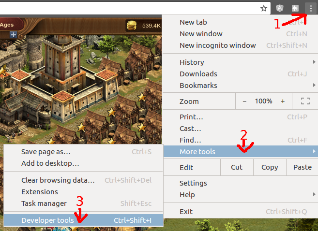
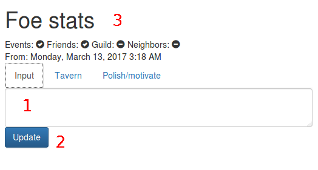

Go to forgeofempires.com and connect you to your world.
In this page
In order to get all JSON, you may need to open Event history and display friend list, guild list and neighbors.
You can see Tavern sit and Polish/motivate in the other tabs.